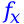
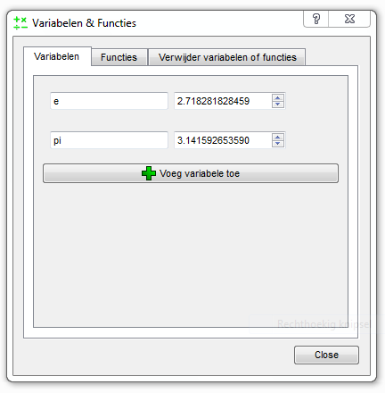

Wat zijn variabelen
Variabelen zijn net zoals getallen, ze worden dan ook behandeld als getallen.
Het enige verschil is dat hun waarde kan veranderen.
Variabelen hebben een naam, vaak is dit een simpele naam als x.
Maar ze kunnen elke naam hebben die u wilt, en nog belangrijker: ze kunnen elke waarde bevatten die u wilt.
Bijvoorbeeld: als de variabele x de waarde 5 is, dan zal 2*x gelijk aan 10 zijn.
Variabelen kunnen vaker in een berekening voorkomen, bijvoorbeeld: u hebt een variabele secsInMinute wat (uiteraard) 60 is.
Dan kan u secsInMinute+secsInMinute/2 gebruiken om het aantal seconden in anderhalve minuut te berekenen.
Meer dan 1 variabele kan in een berekening voorkomen, dus met x*secsInMinute berekent u het aantal seconden in x minuten.
In dit voorbeeld (waar x 5 is en secsInMinute 60 is) zal de uitkomst 300 zijn.
Verder kan een variabele ook nog eens van waarde veranderen.
Dus als u niet het aantal seconden in 5 minutes wilde berekenen, maar het aantal seconden in 1 uur dan kan u typen: x=60 (en druk dan op Enter of Ok).
Dan maakt u het invoervakje leeg en vult u weer x*secsInMinute in, wat zal als uitkomst 3600 zal hebben.
Natuurlijk zou het in dit geval een stuk sneller zijn om 60*60 te typen, maar dit was dan ook slechts een voorbeeld.
Variabelen kunnen erg nuttig zijn met grotere berekeningen, en met lastigere getallen.
Verder zijn ze handig om een getal tijdelijk op te slaan, of zelfs voor een langere tijd want Dalculator onthoudt uw variabelen en hun waarden.
Merk op dat variabelen hoofdletter gevoelig zijn!
Verder zijn er een aantal regels voor het benoemen van variabelen, zie Variabelen en functies namen geven voor meer info.
Voorgedefinieerde variabelen
Er zijn 2 variabelen voorgedefinieerd in Dalculator, dit zijn pi en e. De variabele pi is gelijk aan de wiskundige constante π (wat in Dalculator 3.141592653590 is). De variabele e is gelijk aan de wiskundige constante e (wat in Dalculator 2.718281828459 is). U kunt deze variabelen bewerken als elke andere variabele. Als u er een andere waarde aan toegekend hebt kunt u makkelijk de originele waarde terugkrijgen, daarvoor verwijdert u de variabele gewoon en dan maakt Dalculator hem automatisch opnieuw aan met zijn originele waarde.
Wat zijn functies
Functies zijn een snellere manier om veel gebruikte formules te gebruiken.
Als u de oppervlakte van een cirkel moet berekenen, dan kunt u pi*r^2 gebruiken.
Maar dit kan een formule zijn die u steeds vergeet, of sommige formules zijn te lang om telkens weer in te typen.
Dat is waar functies voor zijn, in dit geval kunt u een functie genaamd cirkel maken.
Nadat u deze functie heeft gemaakt hoeft u enkel cirkel(r) te typen en dan wordt de oppervlakte van de cirkel met een straal r uitgerekend!
Functies hebben altijd een naam (zie: Variabelen en functies namen geven voor meer info), deze naam wordt gebruikt om te achterhalen om welke functie het gaat.
In het voorbeeld was de naam cirkel.
Om een functie te gebruiken moet de naam getypt worden en daarna een openingshaakje: cirkel(
Nu komen de argumenten, dit zijn waarde die de functie nodig heeft om zijn werk te doen.
In ons voorbeeld hoeven we enkel de straal van de cirkel door te geven: cirkel(r
Als laatst moeten de haakjes gesloten worden: cirkel(r).
Soms moet u meer dan 1 waarde aan een functie doorgeven, bijvoorbeeld bij het berekenen van de oppervlakte van een rechthoek.
Als u meer dan 1 waarde moet doorgeven aan een functie, dan zet u een komma tussen de verschillende waardes.
Dus als de functie rh de oppervlakte van een rechthoek berekent, typt u: rh(breedte, hoogte)
De spatie na de komma is optioneel.
Een functie zonder argument ziet er uiteraard zo uit: functie()
Voorgedefinieerde functies
In Dalculator zitten een aantal voorgedefinieerde functies.
De meeste hebben enkel 1 argument nodig, en ze zijn allemaal in geheel hoofdletters of geheel kleine letters.
U kunt deze functies niet bewerken, maar u kunt ze herdefiniëren, door een functie met dezelfde naam te definiëren gewoon net zoals u elke andere functie zou definiëren.
Als u de originele functie wil herstellen, dan hoeft u slechts uw eigen functie te verwijderen.
Voor meer info over het definiëren van functies, zie Het variabelen & functies overzicht en Functies definiëren en bewerken.
Bij sommige functies moet het argument in radialen of graden, en bij sommige zal het resultaat in radialen of graden zijn.
U kunt aangeven welke van de twee Dalculator moet gebruiken, door op Instellingen > Graden of radialen > Graden of Instellingen > Graden of radialen > Radialen in het menu te klikken.
De standaard instelling is radialen.
| Naam* | Wat doet het |
| ABS | Geeft de absolute waarde van zijn argument, negatieve waardes worden dus positief. |
| ACOS | Geeft de boogcosinus van het argument. Het resultaat is in graden of radialen (afhankelijk van de instellingen). In goniometrie is dit de inverse bewerking van de cosinus. |
| ASIN | Geeft de boogsinus van het argument. Het resultaat is in graden of radialen (afhankelijk van de instellingen). In goniometrie is dit de inverse bewerking van de sinus. |
| ATAN | Geeft de boogtangens van het argument. Het resultaat is in graden of radialen (afhankelijk van de instellingen). In goniometrie is dit de inverse bewerking van de tangens. |
| AVG | Geeft het gemiddelde van zijn argumenten. |
| CEIL | Rond het argument naar boven af. |
| COS | Geeft de cosinus van het argument. Het argument moet in graden of radialen zijn (afhankelijk van de instellingen). |
| COSH | Geeft de hyperbolische cosinus van het argument. |
| DEG | Zet het argument (dat in radialen moet zijn) om in graden. |
| EXP | Geeft eargument waar e de wiskundige constante e is (dat is in Dalculator: 2.718281828459) |
| FACULTY | Geeft de faculteit van het argument, bijvoorbeeld FACULTY(3) = 3*2*1 = 6. |
| FLOOR | Rond het argument naar beneden af. |
| IF | Heeft op zijn minst 2 argumenten nodig, als het eerste argument niet 0 is zal het resultaat het tweede argument zijn. Als het eerste argument wel 0 is en een derde argument is gegeven, dan zal het resultaat het 3e argument zijn. Als het eerste argument 0 is en er is geen derde argument gegeven dan zal het resultaat 0 zijn. |
| LOG | Geeft het natuurlijke logarithme van het argument. |
| LOG10 | Geeft het normale (basis-10) logarithme van het argument. |
| NCR | Geeft het aantal mogelijke combinaties, dus het aantal manieren waarop je k objecten uit een groep van n kan kiezen zonder dat de volgorde van belang is. Het eerste argument is n, het tweede argument is k. |
| NPR | Geeft het aantal mogelijke permutaties, dus het aantal manieren waarop je k objecten uit een groep van n kan kiezen waarbij de volgorde van belang is. Het eerste argument is n, het tweede argument is k. |
| RAD | Zet het argument (dat in graden moet zijn) om in radialen. |
| RAND | Het resultaat is een willekeurig getal 0 en 1 als geen argumenten gegeven zijn. Als er 1 argument gegeven is zal het resultaat een willekeurig geheel getal van 0 tot en met het argument zijn. Als er 2 argumenten gegeven zijn is het resultaat een geheel getal tussen het eerste argument (inbegrepen) en het laatste argument (inbegrepen). |
| ROUND | Rond het argument af. |
| SIN | Geeft de sinus van het argument. Het argument moet in graden of radialen zijn (afhankelijk van de instellingen). |
| SINH | Geeft de hyperbolische sinus van het argument. |
| TAN | Geeft de tangens van het argument. Het argument moet in graden of radialen zijn (afhankelijk van de instellingen). |
| TANH | Geeft de hyperbolische tangens van het argument. |
* = Volledig in kleine letters is dus ook toegestaan, bijvoorbeeld abs in plaats van ABS.
Variabelen en functies namen geven
Er zijn een aantal regels bij het geven van een naam aan een variabele of functie. De naam moet starten met een lage streept (_) of een letter (hoofdletter of kleine letter). Daarna kunnen er zoveel letters (hoofdletters of kleine letters), lage strepen (_) of getallen gebruikt worden als u wilt. Merk op dat een naam niet met een getal mag beginnen! Onthoud, namen zijn hoofdlettergevoelig. Dus mijnnaam is iets anders dan mijnNaam! Een variabele en een functie kunnen dezelfde naam hebben, omdat de haakjes aangeven wanneer het een functie is en wanneer het een variabele is. Er kunnen geen 2 variabelen dezelfde naam hebben, hetzelfde geldt voor functies: geen 2 functies kunnen dezelfde naam hebben. Een paar voorbeelden:
| Naam | Toegestaan? | Waarom? |
| mijnnaam | Ja | - |
| mijnNaam | Ja | - |
| mijn naam | Nee | Spaties zijn niet toegestaan in namen |
| mijn_naam | Ja | - |
| mijnTweedeNaam | Ja | - |
| mijn2eNaam | Ja | - |
| 2eNaam | Nee | Een naam mag niet met een getal beginnen |
| _2eNaam | Ja | - |
| __ | Ja | - |
| mijn-naam | Nee | Een '-' is niet toegestaan in namen |
| mijn(tweede)naam | Nee | '(' en ')' zijn niet toegestaan in namen |
Het variabelen & functies overzicht
Het variabelen en functies overzicht kan gebruikt worden om variabelen en functies te bewerken. Variabelen kunnen ook bewerkt worden door variabele=waarde te typen, maar voor het verwijderen van variabelen heeft u dit overzicht nodig. Functies kunnen alleen in dit overzicht bewerkt en verwijderd worden. Om dit overzicht te openen klikt u op de -knop, u vindt deze knop links onder in het hoofdscherm. Wanneer u op die knop geklikt hebt zal het volgende scherm verschijnen:  In dit overzicht staan 3 tabbladen, waarin u uw variabelen en functies kan bewerken. Op de pagina die u op de screenshot hierboven ziet kunt u uw variabelen bewerken. Gebruik de tabbladen bovenaan om naar een andere pagina binnen het overzicht te navigeren. Op de pagina Functies kunt u uw functies bewerken. Op de laatste pagina kan u variabelen en funties verwijderen, selecteer hiervoor de variabelen en functies die u wilt verwijderen en klik dan op Verwijder
Functies definiëren & bewerken.
U kunt nieuwe functies aanmaken in het variabelen & functies overzicht. Hoe u zorgt dat de functies ook echt wat doen wordt hier uitgelegd. Wanneer u op Voeg functie toe klikt zal een nieuwe functie verschijnen aan het einde van de lijst. U kunt deze functie hernoemen naar wat u maar wilt, zolang u de regels voor het geven van namen maar volgt. In het invoervakje rechts van de naam staat standaard ARG0+ARG1, dit is wat de functie doet. U kunt gewoon een berekening typen in dat invoervakje, en die berekening zal uitgevoerd worden wanneer u de functie gebruikt. Maar functies kunnen argumenten hebben (zie Wat zijn functies), u kunt ook argumenten gebruiken in uw zelfgemaakte functies. Daarvoor gebruikt u ARGnummer-van-het-argument om het argument te gebruiken. Het aantal argumenten dat uw functie nodig heeft wordt bepaald aan de hand van het aantal gebruikte ARG-variabelen in uw functie. Bijvoorbeeld: de functie func bevat: ARG0+ARG1, dan zou deze functie dus 2 argumenten nodig hebben. Wanneer u deze functie gebruikt, func(3, 4) zou dat resulteren in 7. Omdat ARG0 3 is (in dit voorbeeld), en ARG1 4 is (in dit voorbeeld). De functie telt ARG1 bij ARG0 op, dus dat wordt 3+4 = 7. Merk op dat het eerste argument niet ARG1 heet, maar ARG0, dus het tellen van de argumenten begint bij 0!